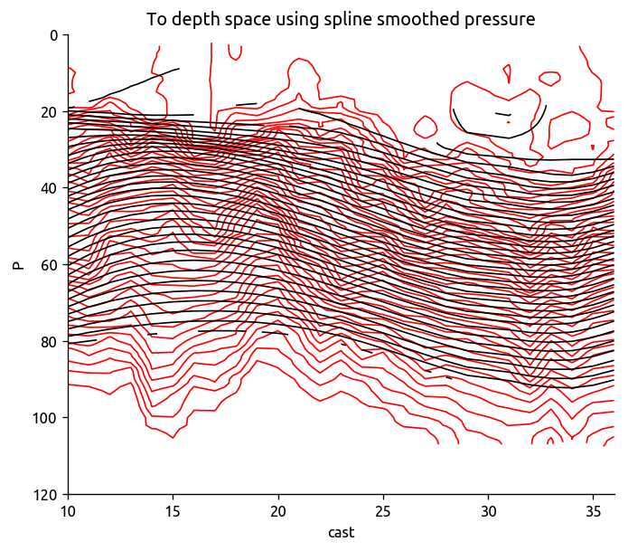
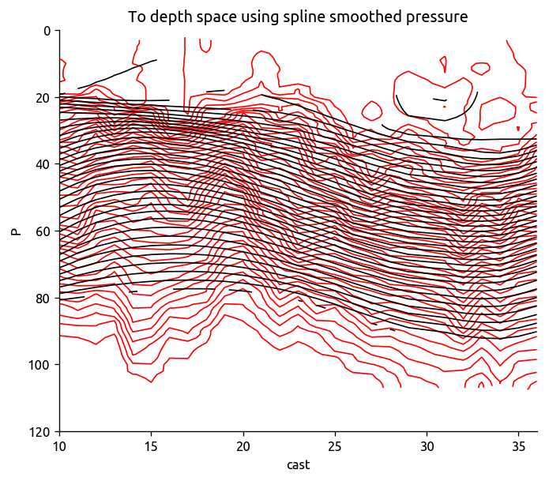

BoB ASIRI 2013 CTD χpod¶
This notebook will attempt to infer eddy diffusivity \(K_e\) from the basin-wide transect of \(χ, K_T\)
import sys
sys.path.append('../eddydiff/')
import eddydiff as ed
/home/deepak/anaconda3/lib/python3.6/importlib/_bootstrap.py:219: RuntimeWarning: numpy.dtype size changed, may indicate binary incompatibility. Expected 96, got 88
return f(*args, **kwds)
Transect TS plots¶
tr1 = xr.open_dataset('../datasets/bob-ctd-chipod/transect_1.nc', autoclose=True)
tr2 = xr.open_dataset('../datasets/bob-ctd-chipod/transect_2.nc', autoclose=True)
tr3 = xr.open_dataset('../datasets/bob-ctd-chipod/transect_3.nc', autoclose=True)
_, bins = pd.cut(tr1.rho.values.ravel(), 8, retbins=True)
dcpy.oceans.TSplot(tr1.S, tr1['T'], tr1.pres, rho_levels=bins-1000)
plt.title('Transect 1')
plt.savefig('../images/bob-TS-transect-1.png', bbox_inches='tight')
dcpy.oceans.TSplot(tr2.S, tr2['T'], tr2.pres, rho_levels=bins-1000)
plt.title('Transect 2')
plt.savefig('../images/bob-TS-transect-2.png', bbox_inches='tight')
dcpy.oceans.TSplot(tr3.S, tr3['T'], tr3.pres, rho_levels=bins-1000)
plt.title('Transect 3')
plt.savefig('../images/bob-TS-transect-3.png', bbox_inches='tight')
Read and plot single transect¶
transect = (xr.open_dataset('../datasets/bob-ctd-chipod/transect_1.nc', autoclose=True)
.sel(cast=slice(10, 36)))
transect['KtTz'] = transect['KT'] * transect['dTdz']
transect['Jq'] = 1025 * 4200 * transect['KtTz']
transect['KtTz'].values[np.abs(transect['Jq'].values) > 500] = np.nan
transect['Jq'].values[np.abs(transect['Jq'].values) > 500] = np.nan
np.log10(transect['KT']).plot(robust=True, yincrease=False)
plt.figure()
transect['dTdz'].plot(robust=True, yincrease=False)
plt.figure()
np.log10(transect['KtTz']).plot(robust=True, yincrease=False)
plt.figure()
transect['T'].sel(cast=slice(10, 36)).plot.contour(
levels=40, colors='k', robust=True, yincrease=False)
transect['rho'].sel(cast=slice(10, 36)).plot.contour(
levels=20, colors='r', robust=True, yincrease=False)
plt.title('black=T, red=ρ')
# transect = transect.drop(30, dim='cast').sel(P=slice(None, 110))
/home/deepak/anaconda3/lib/python3.6/site-packages/ipykernel_launcher.py:7: RuntimeWarning: invalid value encountered in greater
import sys
/home/deepak/anaconda3/lib/python3.6/site-packages/ipykernel_launcher.py:8: RuntimeWarning: invalid value encountered in greater
Text(0.5,1,'black=T, red=ρ')


Make sure \(J_q\) isn’t crazy
np.log10(np.abs(transect['Jq'])).plot.hist()
(array([ 30., 179., 503., 586., 491., 301., 138., 67., 36., 25.]),
array([-3.48594309, -2.87431314, -2.2626832 , -1.65105325, -1.03942331,
-0.42779336, 0.18383659, 0.79546653, 1.40709648, 2.01872642,
2.63035637]),
<a list of 10 Patch objects>)
Process transect data¶
transect = (xr.open_dataset('../datasets/bob-ctd-chipod/transect_1.nc', autoclose=True)
.sel(cast=slice(10, 36)))
transect['KtTz'] = transect['KT'] * transect['dTdz']
transect['Jq'] = 1025 * 4200 * transect['KtTz']
transect['KtTz'].values[np.abs(transect['Jq'].values) > 1000] = np.nan
transect['Jq'].values[np.abs(transect['Jq'].values) > 1000] = np.nan
transect = transect.sel(P=slice(None, 210))
# def process_transect
# takes transect in z-space as input.
trmean_rho = ed.transect_to_density_space(transect)
/home/deepak/anaconda3/lib/python3.6/site-packages/ipykernel_launcher.py:6: RuntimeWarning: invalid value encountered in greater
/home/deepak/anaconda3/lib/python3.6/site-packages/ipykernel_launcher.py:7: RuntimeWarning: invalid value encountered in greater
import sys
Read in other datasets¶
cole = ed.read_cole()
argograd = xr.open_dataset('../datasets/argo_dec_iso_gradients.nc',
decode_times=False, autoclose=True).load()
eccograd = xr.open_dataset('../datasets/ecco_monthly_iso_gradient.nc',
decode_times=False, autoclose=True).load()
Using climatological gradients¶
eccoKe = ed.process_transect_1d(transect, eccograd, 'ECCO transect1')
argoKe = ed.process_transect_1d(transect, argograd, 'ARGO transect1')
Ke = pd.DataFrame()
Ke['ecco'] = eccoKe.Ke
Ke['argo'] = argoKe.Ke
# Ke['rho'] = Ke.ecco.index.mid.astype('float')
eccoKe
| chi | KtTz | dTdz | dTmdz | dTiso | KT | Ke | |
|---|---|---|---|---|---|---|---|
| rho | |||||||
| (1019.0, 1020.5] | 1.087531e-07 | 3.332968e-06 | 0.017668 | -0.019127 | 2.065550e-06 | 0.000894 | -2196.788029 |
| (1020.5, 1021.0] | 4.242331e-08 | 1.787747e-06 | 0.023994 | -0.015216 | 3.913078e-06 | 0.003574 | -391.230758 |
| (1021.0, 1022.4] | 1.383193e-07 | 7.649035e-07 | 0.099101 | 0.010196 | 1.521268e-06 | 0.000010 | 26514.376375 |
| (1022.4, 1023.5] | 7.467831e-08 | 3.012975e-07 | 0.131284 | 0.106301 | 1.086169e-06 | 0.000003 | 4501.655168 |
| (1023.5, 1024.2] | 1.822328e-07 | 7.604694e-07 | 0.121188 | 0.130226 | 7.190793e-07 | 0.000006 | -15309.981990 |
| (1024.2, 1024.9] | 2.110117e-07 | 1.077232e-06 | 0.107393 | 0.113445 | 4.345696e-07 | 0.000011 | -88435.950761 |
| (1024.9, 1025.4] | 1.015220e-07 | 5.481218e-07 | 0.093691 | 0.091905 | 2.953978e-07 | 0.000006 | 4423.677911 |
| (1025.4, 1025.8] | 1.114811e-07 | 6.400163e-07 | 0.079396 | 0.082158 | 2.854238e-07 | 0.000007 | 38766.088873 |
| (1025.8, 1026.1] | 1.349486e-07 | 8.839158e-07 | 0.060302 | 0.077620 | 2.923084e-07 | 0.000105 | -13281.205312 |
| (1026.1, 1026.5] | 2.656529e-08 | 4.195098e-07 | 0.041820 | 0.076793 | 2.593703e-07 | 0.000235 | -281430.091207 |
/home/deepak/anaconda3/lib/python3.6/site-packages/_pytest/fixtures.py:847: DeprecationWarning: The `convert` argument is deprecated in favor of `converter`. It will be removed after 2019/01.
params = attr.ib(convert=attr.converters.optional(tuple))
/home/deepak/anaconda3/lib/python3.6/site-packages/_pytest/fixtures.py:849: DeprecationWarning: The `convert` argument is deprecated in favor of `converter`. It will be removed after 2019/01.
ids = attr.ib(default=None, convert=_ensure_immutable_ids)
ed.plot_bar_Ke(eccoKe)
# ed.plot_bar_Ke(argoKe)
plt.figure()
argomean.dTdia.plot(x='rho')
eccomean.dTdia.plot(x='rho')
(trmean.dTdz).plot(x='rho')
plt.legend(['argo', 'ecco', 'transect'])
plt.figure()
argomean.dTiso.plot(x='rho')
eccomean.dTiso.plot(x='rho')
---------------------------------------------------------------------------
NameError Traceback (most recent call last)
<ipython-input-30-9f1417f79a7b> in <module>()
1 plt.figure()
----> 2 argomean.dTdia.plot(x='rho')
3 eccomean.dTdia.plot(x='rho')
4 (trmean.dTdz).plot(x='rho')
5 plt.legend(['argo', 'ecco', 'transect'])
NameError: name 'argomean' is not defined
<Figure size 780x660 with 0 Axes>
(ecco.dTiso.sel(lat=slice(transect.lat.min(), transect.lat.max()))
.sel(lon=transect.lon.mean(), method='nearest')
.plot.contourf(robust=True, yincrease=False))
(ecco.Tmean.sel(lat=slice(transect.lat.min(), transect.lat.max()))
.sel(lon=transect.lon.mean(), method='nearest')
.plot.contour(robust=True, colors='w', yincrease=False))
plt.gca().set_ylim([200, 0])
---------------------------------------------------------------------------
NameError Traceback (most recent call last)
<ipython-input-12-04509405bfa7> in <module>()
----> 1 (ecco.dTiso.sel(lat=slice(transect.lat.min(), transect.lat.max()))
2 .sel(lon=transect.lon.mean(), method='nearest')
3 .plot.contourf(robust=True, yincrease=False))
4
5 (ecco.Tmean.sel(lat=slice(transect.lat.min(), transect.lat.max()))
NameError: name 'ecco' is not defined
Naveira Garabato et al. (2016) approach¶
For turbulence quantities, the averaging operator ⟨⟩ operates only in the vertical direction.
Mean temperature field is determined by spline smoothing on isopycnals and then differentiated to get “large-scale” gradients.
Calculation¶
# 1. convert to density space
#############################
trdens = ed.to_density_space(transect1)
Tdens = trdens['T']
# 2. fit cubic spline along isopycnal
# - this needs to take ρbins as input?
#####################################
Tdens_i = ed.smooth_cubic_spline(trdens['T'], False)
Pdens_i = ed.smooth_cubic_spline(trdens['P'], False)
Tsmooth = ed.to_depth_space(Tdens_i, Pold=Pdens_i, Pnew=None)
# 3. calculate gradients with smoothed field
############################################
dTiso, dTdia = ed.calc_iso_dia_gradients(Tdens_i, Pdens_i)
dTmdz = ed.to_density_space(-ed.xgradient(Tsmooth, 'P'))
dTmdz.name = 'dz'
# 4. Bin smoothed gradients by density
######################################
ρbins = Tdens_i.rho[::2]
dTdf = (ed.exchange(xr.merge([dTdia, dTiso]),
{'cast': 'dist'})
.to_dataframe()
.reset_index())
dTmean = ed.bin_avg_in_density(dTdf, ρbins)
transmean = ed.bin_avg_in_density(trdens.to_dataframe().reset_index(), ρbins)
# 5. do estimate
################
transKe = xr.Dataset()
transKe['Ke'] = (transmean.chi/2 - transmean.KtTz * dTmean.dia)/dTmean.iso**2
transKe.Ke.name = '$K_e$'
transKe['KT'] = transmean.KT
transKe['KtTz'] = transmean.KtTz
transKe['dTdz'] = transmean.dTdz
transKe['chi'] = transmean.chi
transKe['dTmdz'] = dTmean.dia
transKe['dTiso'] = dTmean.iso
transKe['rho'].values = np.round(transKe.rho.values, decimals=2)
transKe.attrs.name = 'BoB CTD χpod'
ed.plot_transect_Ke(transKe)
ed.plot_bar_Ke(transKe.isel(cast=20).to_dataframe())
/home/deepak/anaconda3/lib/python3.6/site-packages/numpy/lib/function_base.py:1775: RuntimeWarning: divide by zero encountered in true_divide
a = -(dx2)/(dx1 * (dx1 + dx2))
/home/deepak/anaconda3/lib/python3.6/site-packages/numpy/lib/function_base.py:1775: RuntimeWarning: invalid value encountered in true_divide
a = -(dx2)/(dx1 * (dx1 + dx2))
/home/deepak/anaconda3/lib/python3.6/site-packages/numpy/lib/function_base.py:1776: RuntimeWarning: divide by zero encountered in true_divide
b = (dx2 - dx1) / (dx1 * dx2)
/home/deepak/anaconda3/lib/python3.6/site-packages/numpy/lib/function_base.py:1776: RuntimeWarning: invalid value encountered in true_divide
b = (dx2 - dx1) / (dx1 * dx2)
/home/deepak/anaconda3/lib/python3.6/site-packages/numpy/lib/function_base.py:1777: RuntimeWarning: divide by zero encountered in true_divide
c = dx1 / (dx2 * (dx1 + dx2))
/home/deepak/anaconda3/lib/python3.6/site-packages/numpy/lib/function_base.py:1777: RuntimeWarning: invalid value encountered in true_divide
c = dx1 / (dx2 * (dx1 + dx2))
---------------------------------------------------------------------------
InvalidIndexError Traceback (most recent call last)
<ipython-input-470-da88d5c9529c> in <module>()
13 # 3. calculate gradients with smoothed field
14 ############################################
---> 15 dTiso, dTdia = ed.calc_iso_dia_gradients(Tdens_i, Pdens_i)
16 dTmdz = ed.to_density_space(-ed.xgradient(Tsmooth, 'P'))
17 dTmdz.name = 'dz'
~/work/eddydiff/eddydiff/eddydiff.py in calc_iso_dia_gradients(field, pres, debug)
386
387 iso = (xgradient(field, 'dist')
--> 388 .interp({'dist': field.dist.values})/1000)
389 iso.name = 'iso'
390
~/work/python/xarray/xarray/core/dataarray.py in interp(self, coords, method, assume_sorted, kwargs, **coords_kwargs)
949 ds = self._to_temp_dataset().interp(
950 coords, method=method, kwargs=kwargs, assume_sorted=assume_sorted,
--> 951 **coords_kwargs)
952 return self._from_temp_dataset(ds)
953
~/work/python/xarray/xarray/core/dataset.py in interp(self, coords, method, assume_sorted, kwargs, **coords_kwargs)
1876 in indexers.items() if k in var.dims}
1877 variables[name] = missing.interp(
-> 1878 var, var_indexers, method, **kwargs)
1879 elif all(d not in indexers for d in var.dims):
1880 # keep unrelated object array
~/work/python/xarray/xarray/core/missing.py in interp(var, indexes_coords, method, **kwargs)
427 # simple speed up for the local interpolation
428 if method in ['linear', 'nearest']:
--> 429 var, indexes_coords = _localize(var, indexes_coords)
430
431 # default behavior
~/work/python/xarray/xarray/core/missing.py in _localize(var, indexes_coords)
388 for dim, [x, new_x] in indexes_coords.items():
389 index = x.to_index()
--> 390 imin = index.get_loc(np.min(new_x.values), method='nearest')
391 imax = index.get_loc(np.max(new_x.values), method='nearest')
392
~/anaconda3/lib/python3.6/site-packages/pandas/core/indexes/numeric.py in get_loc(self, key, method, tolerance)
417 pass
418 return super(Float64Index, self).get_loc(key, method=method,
--> 419 tolerance=tolerance)
420
421 @cache_readonly
~/anaconda3/lib/python3.6/site-packages/pandas/core/indexes/base.py in get_loc(self, key, method, tolerance)
3066 return self._engine.get_loc(self._maybe_cast_indexer(key))
3067
-> 3068 indexer = self.get_indexer([key], method=method, tolerance=tolerance)
3069 if indexer.ndim > 1 or indexer.size > 1:
3070 raise TypeError('get_loc requires scalar valued input')
~/anaconda3/lib/python3.6/site-packages/pandas/core/indexes/base.py in get_indexer(self, target, method, limit, tolerance)
3228
3229 if not self.is_unique:
-> 3230 raise InvalidIndexError('Reindexing only valid with uniquely'
3231 ' valued Index objects')
3232
InvalidIndexError: Reindexing only valid with uniquely valued Index objects
Debugging plots¶
trdens = ed.to_density_space(transect1)
Tdens = trdens['T']trdens['P'].plot.contour(levels=20)
dcpy.ts.xfilter(trdens['P'], dim='cast', flen=10).plot.contour(
colors='r', levels=20)
Pdens_i.plot.contour(levels=20, colors='k')
<matplotlib.contour.QuadContourSet at 0x7f917a6fb048>
Distributions: dT/dz and dT_diapycnal¶
The distributions of (dT/dz)_ρ is different from (dT/dz)_z which is maybe not surprising but the difference is a factor of 2, this makes me suspicious.
dTi, dTd = ed.calc_iso_dia_gradients(trdens['T'], trdens['P'])
dTi_i, dTd_i = ed.calc_iso_dia_gradients(Tdens_i, Pdens_i)
histargs = {'histtype': 'step'}
f, ax = plt.subplots(1, 2)
dTi.plot.hist(ax=ax[0], **histargs)
dTi_i.plot.hist(ax=ax[0], **histargs)
ax[0].legend(['dTiso of T interp to ρ space',
'dTiso of spline smooth T'])
dTd.plot.hist(ax=ax[1], **histargs)
dTd_i.plot.hist(ax=ax[1], **histargs)
trdens['dTdz'].plot.hist(ax=ax[1], **histargs)
transect['dTdz'].plot.hist(ax=ax[1], **histargs)
dTmdz.plot.hist(ax=ax[1], **histargs)
plt.gca().legend(['dTdia of T interp to ρ space',
'dTdia of spline smooth T',
'local dTdz interp to ρ space',
'observed local dTdz',
'dTdz of spline smooth T after moving to z space'])
f.set_size_inches(9, 5)

%matplotlib inline
plt.scatter(xr.broadcast(trdens['dist'], Pdens_i)[0].T,
Pdens_i, 20, dTd_i, cmap=mpl.cm.RdYlBu)
plt.gca().invert_yaxis()
plt.colorbar()
transect['T'].plot.contour(colors='r', levels=30, yincrease=False)
transect['rho'].plot.contour(levels=25, colors='k', yincrease=False)
<matplotlib.contour.QuadContourSet at 0x7f91c0646630>
%matplotlib inline
plt.scatter(xr.broadcast(trdens['dist'], Pdens_i)[0].T,
Pdens_i, 20, dTd_i, cmap=mpl.cm.RdYlBu)
plt.gca().invert_yaxis()
plt.colorbar()
<matplotlib.colorbar.Colorbar at 0x7f3310a6c828>
###################################
# sample mean fields along transect
###################################
seltrans = dict(lon=transect.lon, lat=transect.lat, method='nearest')
f, ax = plt.subplots(4, 1)
f.set_size_inches(8, 14)
(eccograd.dTiso.sel(pres=slice(200, 0, -1)).sel(**seltrans)
.plot(ax=ax[0], cmap=mpl.cm.Reds))
(eccograd.Tmean.sel(pres=slice(200, 0, -1)).sel(**seltrans)
.plot.contour(ax=ax[0], levels=20, colors='w'))
ax[0].set_ylim([200, 0])
# plots
Tdens.plot.contourf(levels=50, ax=ax[1], cmap=mpl.cm.RdYlBu_r, yincrease=False)
Tdens_i.plot.contour(levels=50, colors='k', ax=ax[1], yincrease=False)
trdens.P.plot.contour(levels=20, colors='lightgray', ax=ax[1], yincrease=False)
np.abs(dTiso).plot(ax=ax[2], cmap=mpl.cm.Reds, robust=True, yincrease=False)
Tdens_i.plot.contour(levels=50, colors='k', ax=ax[2], yincrease=False)
#trdens.P.plot.contour(levels=20, colors='lightgray', ax=ax[2], yincrease=False)
dTdia.plot(ax=ax[3], robust=True, yincrease=False)
Tdens_i.plot.contour(levels=50, colors='k', ax=ax[3], yincrease=False)
Pdens_i.plot.contour(levels=20, colors='lightgray', ax=ax[3], yincrease=False)
---------------------------------------------------------------------------
TypeError Traceback (most recent call last)
<ipython-input-326-732c21cbdbbf> in <module>()
7 f.set_size_inches(8, 14)
8
----> 9 (eccograd.dTiso.sel(pres=slice(200, 0, -1)).sel(**seltrans)
10 .plot(ax=ax[0], cmap=mpl.cm.Reds))
11 (eccograd.Tmean.sel(pres=slice(200, 0, -1)).sel(**seltrans)
~/work/python/xarray/xarray/core/dataarray.py in sel(self, indexers, method, tolerance, drop, **indexers_kwargs)
782 indexers = either_dict_or_kwargs(indexers, indexers_kwargs, 'sel')
783 ds = self._to_temp_dataset().sel(
--> 784 indexers=indexers, drop=drop, method=method, tolerance=tolerance)
785 return self._from_temp_dataset(ds)
786
~/work/python/xarray/xarray/core/dataset.py in sel(self, indexers, method, tolerance, drop, **indexers_kwargs)
1507 indexers = either_dict_or_kwargs(indexers, indexers_kwargs, 'sel')
1508 pos_indexers, new_indexes = remap_label_indexers(
-> 1509 self, indexers=indexers, method=method, tolerance=tolerance)
1510 result = self.isel(indexers=pos_indexers, drop=drop)
1511 return result._replace_indexes(new_indexes)
~/work/python/xarray/xarray/core/coordinates.py in remap_label_indexers(obj, indexers, method, tolerance, **indexers_kwargs)
353
354 pos_indexers, new_indexes = indexing.remap_label_indexers(
--> 355 obj, v_indexers, method=method, tolerance=tolerance
356 )
357 # attach indexer's coordinate to pos_indexers
~/work/python/xarray/xarray/core/indexing.py in remap_label_indexers(data_obj, indexers, method, tolerance)
248 else:
249 idxr, new_idx = convert_label_indexer(index, label,
--> 250 dim, method, tolerance)
251 pos_indexers[dim] = idxr
252 if new_idx is not None:
~/work/python/xarray/xarray/core/indexing.py in convert_label_indexer(index, label, index_name, method, tolerance)
145
146 elif is_dict_like(label):
--> 147 is_nested_vals = _is_nested_tuple(tuple(label.values()))
148 if not isinstance(index, pd.MultiIndex):
149 raise ValueError('cannot use a dict-like object for selection on '
TypeError: 'numpy.ndarray' object is not callable
f, ax = plt.subplots(2,1)
f.set_size_inches(8,6)
trdens['P'].plot.contour(ax=ax[0], yincrease=False, levels=50, colors='k')
Pdens_i.plot.contour(ax=ax[0], yincrease=False, levels=40, cmap=mpl.cm.Blues)
transect['rho'].plot.contour(ax=ax[1], yincrease=False, levels=50)
ax[1].set_ylim([100, 0])
(100, 0)

Ferrari & Polzin (2005) approach¶
They average all data on density surfaces, estimate mean depth of isopycnal \(z_n\) and calculate diapycnal gradient. The result is a vertical profile of eddy diffusivity. All spatial variations are averaged over.
They calculate an isopycnal gradient by doing a plane fit along isopycnals to all the data. This is required for the finestructure estimate
transKe
<xarray.Dataset>
Dimensions: (dist: 26, rho: 14)
Coordinates:
* dist (dist) float64 0.0 37.02 74.47 111.3 148.0 185.1 222.2 259.1 ...
* rho (rho) float64 1.02e+03 1.02e+03 1.021e+03 1.021e+03 1.022e+03 ...
Data variables:
Ke (dist, rho) float64 nan nan nan -293.5 -517.0 -2.837e+03 ...
KT (dist, rho) float64 nan nan 0.0003355 6.889e-08 2.743e-08 ...
KtTz (dist, rho) float64 nan nan 1.664e-06 4.679e-09 2.365e-09 ...
dTdz (dist, rho) float64 nan nan 0.004763 0.06767 0.1226 0.1494 ...
chi (dist, rho) float64 nan nan 1.865e-08 6.313e-10 3.188e-10 ...
dTmdz (dist, rho) float64 nan nan nan 0.1624 0.3492 0.3736 0.1541 ...
dTiso (dist, rho) float64 nan nan -1.973e-06 -1.23e-06 1.135e-06 ...
# def transect_fp(trdens):
trdens = ed.to_density_space(transect)
dTiso = xr.DataArray(np.ones_like(trdens.rho) * np.nan,
dims=['rho'], coords={'rho': trdens.rho})
# fit straight lines to get mean gradients
# FP do a plane fit in 2D
for idx, rr in enumerate(trdens.rho):
Tvec = trdens['T'].sel(rho=rr)
mask = ~np.isnan(Tvec)
if mask.sum() < 3:
continue
dTiso[idx], _, _, _, _ = sp.stats.linregress(trdens.dist[mask]*1000, Tvec[mask] )
trmean = trdens.mean(dim='cast')
trmean
Tmean = ed.to_depth_space(trmean['T'].expand_dims(['cast']),
Pold=trmean['P'].expand_dims(['cast'])).mean(dim='cast')
rhomean = ed.to_depth_space(trmean['rho'].expand_dims(['cast']),
Pold=trmean['P'].expand_dims(['cast'])).mean(dim='cast')
_, Tsmooth = ed.fit_spline(Tmean.P, Tmean, k=2)
# Tmean.plot()
dTdz = ed.xgradient(-Tsmooth, dim='P')
dTdz.coords['rho'] = rhomean
dTdz = dTdz.expand_dims(['cast'])
dTdz['rho'] = dTdz.rho.expand_dims(['cast'])
dTmdz = ed.to_density_space(dTdz).mean(dim='cast')
fpKe = xr.Dataset()
fpKe['chi'] = trmean.chi
fpKe['dTmdz'] = trmean.dTdz
fpKe['dTiso'] = dTiso
fpKe['KtTz'] = trmean.KtTz
fpKe['KT'] = trmean.KT
fpKe['dTdz'] = trmean.dTdz
fpKe['Ke'] = np.abs(fpKe.chi/2 - fpKe.KtTz * fpKe.dTmdz)/fpKe.dTiso**2
ed.plot_bar_Ke(fpKe.to_dataframe())
---------------------------------------------------------------------------
AttributeError Traceback (most recent call last)
<ipython-input-323-721f90866cb5> in <module>()
1 # def transect_fp(trdens):
2
----> 3 trdens = ed.to_density_space(transect)
4
5 dTiso = xr.DataArray(np.ones_like(trdens.rho) * np.nan,
~/work/eddydiff/eddydiff/eddydiff.py in to_density_space(da, rhonew)
199 in_dens = xr.Dataset()
200
--> 201 for vv in da.variables:
202 if vv in da.coords or vv == 'rho':
203 continue
~/anaconda3/lib/python3.6/site-packages/pandas/core/generic.py in __getattr__(self, name)
4370 if self._info_axis._can_hold_identifiers_and_holds_name(name):
4371 return self[name]
-> 4372 return object.__getattribute__(self, name)
4373
4374 def __setattr__(self, name, value):
AttributeError: 'DataFrame' object has no attribute 'variables'
Without interpolating to convert to density space¶
mask= ~np.isnan(trmean_rho['T'].isel(rho=5))
ed.fit_spline(trmean_rho['dist'][mask].values,
trmean_rho['T'].isel(rho=5)[mask].values, debug=True)
(<scipy.interpolate.fitpack2.UnivariateSpline at 0x7f917a7ad6d8>,
array([26.25453411, 26.27269832, 26.26237948, 26.22850841, 26.17573395,
26.10729261, 26.02839219, 25.94359928, 25.85682278, 25.77302511,
25.69583305, 25.63065117, 25.58101885, 25.55179105, 25.54613198,
25.56238605, 25.59792679, 25.64976453, 25.7146301 , 25.79062798,
25.79063393, 25.87376963, 25.95664316, 26.02779096, 26.08732754,
26.10676851, 26.07836197]))
# Run Section 1.3 first
# 2. Generate mean field T, P using cubic splines to smooth
# Calculate Trms as RMS of deviations from smoothed T field
trmean_rho['Tmean'] = ed.smooth_cubic_spline(trmean_rho['T'])
trmean_rho.Tmean.attrs['name'] = 'Smoothed temperature'
trmean_rho['Pmean'] = ed.smooth_cubic_spline(trmean_rho['P'])
trmean_rho.Pmean.attrs['name'] = 'Smoothed pressure'
def check_spline_smoothing(T, Ts, P, Ps, Traw, Praw):
f, ax = plt.subplots(3, 1)
T.plot.contour(ax=ax[0], y='rho', levels=50, colors='r')
Ts.plot.contour(ax=ax[0], y='rho', levels=50, colors='k', yincrease=False)
P.plot.contour(ax=ax[1], y='rho', levels=50, colors='r')
Ps.plot.contour(ax=ax[1], y='rho', levels=50, colors='k', yincrease=False)
#cmat, rhomat = xr.broadcast(T.cast, T.rho)
#ax[2].contour(cmat, P, T, levels=50, colors='r')
Tz = ed.to_depth_space(T, P)
Tzs = ed.to_depth_space(Ts, Ps)
ax[2].contour(xr.broadcast(Traw.cast, Praw)[0], Praw.T, Traw.T, 50,
cmap=mpl.cm.BuGn)
Tz.plot.contour(ax=ax[2], x='cast', levels=30, colors='r')
Tzs.plot.contour(ax=ax[2], x='cast', levels=30,
colors='k', yincrease=False)
f.set_size_inches((8, 10))
ax[0].set_title('Smoothed temp')
ax[1].set_title('Smoothed pressure')
ax[2].set_title('Raw and smoothed temperature in depth space')
ax[2].set_ylim([220, 0])
plt.tight_layout()
check_spline_smoothing(trmean_rho['T'], trmean_rho['Tmean'],
trmean_rho['P'], trmean_rho['Pmean'],
transect['T'], transect['pres'])
trmean_rho['Trms'] = np.sqrt(
((trmean_rho['T'] - trmean_rho['Tmean'])**2).mean(dim='cast'))
trmean_rho.Trms.attrs['name'] = 'RMS temp variations'
/home/deepak/anaconda3/lib/python3.6/site-packages/numpy/core/_methods.py:29: RuntimeWarning: invalid value encountered in reduce
return umr_minimum(a, axis, None, out, keepdims)
/home/deepak/anaconda3/lib/python3.6/site-packages/numpy/core/_methods.py:26: RuntimeWarning: invalid value encountered in reduce
return umr_maximum(a, axis, None, out, keepdims)

# 3. Calculate isopyncal and diapycnal gradients of the mean field
trmean_rho['dTiso'], trmean_rho['dTdia'] = \
ed.calc_iso_dia_gradients(trmean_rho['Tmean'], trmean_rho['Pmean'], debug=True)
trmean_rho.dTiso.attrs['name'] = 'Isopycnal ∇T'
trmean_rho.dTdia.attrs['name'] = 'Diapycnal ∇T'
transKe = xr.Dataset()
transKe['KT'] = trmean_rho.KT
transKe['KtTz'] = trmean_rho.KtTz
transKe['dTdz'] = trmean_rho.dTdz
transKe['chi'] = trmean_rho.chi
transKe['dTmdz'] = trmean_rho.dTdia
transKe['dTiso'] = trmean_rho.dTiso
transKe['rho'].values = np.round(transKe.rho.values, decimals=2)
transKe['Tm'] = trmean_rho['Tmean']
transKe.attrs['name'] = 'BoB CTD χpod'
def calc_Ke(transKe, navg=None):
transKe = transKe.copy()
if navg is not None and np.isinf(navg):
transKe = transKe.mean(dim='cast')
elif navg is not None:
cbins = np.arange(transKe.cast.min(), transKe.cast.max()+1, navg)
transKe = (transKe.groupby_bins('cast', cbins, labels=cbins[:-1]+1)
.mean(dim='cast'))
transKe['Ke'] = (transKe.chi/2 - transKe.KtTz *
transKe.dTmdz)/transKe.dTiso**2
transKe.Ke.values[np.abs(transKe.dTiso.values) < 5e-7] = np.nan
transKe.Ke['name'] = '$K_e$'
transKe.attrs['navg'] = navg
if 'cast_bins' in transKe.coords:
transKe = transKe.rename({'cast_bins': 'cast'})
return transKe
transKe = calc_Ke(transKe)
ed.plot_transect_Ke(transKe)
/home/deepak/anaconda3/lib/python3.6/site-packages/ipykernel_launcher.py:28: RuntimeWarning: invalid value encountered in less
transKe2 = calc_Ke(transKe, navg=None)
ax, axback = ed.plot_transect_var(x='cast', y='rho', data=transKe2.Ke,
fill=trmean_rho['dTiso'], contour=trmean_rho['P'],
xlim=[1, 1e4], xticks=[1e3])
ax, axback = ed.plot_transect_var(x='cast', y='rho', data=transKe2.chi/2,
bar2=transKe2.KtTz * transKe2.dTmdz,
fill=trmean_rho['T'], contour=trmean_rho['P'])
/home/deepak/anaconda3/lib/python3.6/site-packages/ipykernel_launcher.py:28: RuntimeWarning: invalid value encountered in less
/home/deepak/anaconda3/lib/python3.6/site-packages/matplotlib/contour.py:1173: UserWarning: No contour levels were found within the data range.
warnings.warn("No contour levels were found"
transKe2.Ke.plot.line(y='rho', hue='cast', yincrease=False)
plt.gca().set_xscale('log')
plt.gca().set_xlim([1e2, 1e5])
cole = ed.read_cole()
region = ed.get_region_from_transect(transect)
cole_bay = (cole.sel(lat=region['lat'])).mean(dim='lon').mean(dim='lat')
cole_bay['density_mean_depth'] += 1000
cole_bay = cole_bay.set_coords('density_mean_depth')
cole_bay.diffusivity.plot(y='density_mean_depth', color='k', yincrease=False)
[<matplotlib.lines.Line2D at 0x7f91bf98f860>]
transKe2.Ke.where(transKe2.Ke > 0).mean(dim='cast').plot.line(y='rho')
cole_bay = (cole.sel(lat=region['lat'])).mean(dim='lon').mean(dim='lat')
cole_bay['density_mean_depth'] += 1000
cole_bay = cole_bay.set_coords('density_mean_depth')
cole_bay.diffusivity.plot(y='density_mean_depth', color='k', yincrease=False)
plt.gca().set_xscale('log')
plt.gca().set_xlim([1e2, 1e5])
plt.figlegend(['Mean in along-transect direction', 'Cole et al (2015)'])
<matplotlib.legend.Legend at 0x7f91bfb673c8>

Compare various mean fields / gradients¶
argo = xr.open_dataset('../datasets/argo_clim_iso_gradients.nc',
decode_times=False, autoclose=True).load()
ecco = xr.open_dataset('../datasets/ecco_annual_iso_gradient.nc',
autoclose=True).load()
region = ed.get_region_from_transect(transect)
argo.dTiso.sel(**region).mean(dim='lon').plot(robust=True, yincrease=False)
plt.figure()
ecco.dTiso.sel(**region).mean(dim='lon').plot(robust=True, yincrease=False)
plt.figure()
np.abs(trmean_rho.dTiso).plot(robust=True, yincrease=False)
<matplotlib.collections.QuadMesh at 0x7f1c7a70b9e8>

Argo estimate (Cole et al, 2015)¶
region = ed.get_region_from_transect(transect)
cole_bay = (cole.sel(lat=region['lat'], lon=region['lon']))
(cole_bay.diffusivity.mean(dim='lon')
.plot(y='depth', yincrease=False,
norm=mpl.colors.LogNorm(),
cmap=mpl.cm.Reds))
plt.gca().set_ylim([200, 0])
(200, 0)
/home/deepak/anaconda3/lib/python3.6/site-packages/matplotlib/colors.py:1031: RuntimeWarning: invalid value encountered in less_equal
mask |= resdat <= 0
(cole_bay.diffusivity.mean(dim='lat').mean(dim='lon')
.plot.line(y='depth', yincrease=False))
plt.gca().set_xscale('log')
plt.gca().set_xlim([1e2, 3e4])
plt.gca().set_ylim([200, 0])
plt.gca().grid(True)
(cole_bay.diffusivity.groupby_bins(cole_bay.density_mean_depth+1000,
ρbins,
labels=(ρbins[:-1]+ρbins[1:])/2).mean()
.plot.line(y='density_mean_depth_bins', yincrease=False))
[<matplotlib.lines.Line2D at 0x7f91cf175dd8>]
All data combined¶
Let’s ignore 3 for now, not sure why that overlaps.
transect1 = (xr.open_dataset('../datasets/bob-ctd-chipod/transect_1.nc', autoclose=True))
transect2 = (xr.open_dataset('../datasets/bob-ctd-chipod/transect_2.nc', autoclose=True))
transect3 = (xr.open_dataset('../datasets/bob-ctd-chipod/transect_3.nc', autoclose=True))
plt.plot(transect1.lon, transect1.lat, '.', ms=20)
plt.plot(transect2.lon, transect2.lat, '.', ms=20)
plt.plot(transect3.lon, transect3.lat, 'o')
plt.legend(('big(1)', 'big(2)', 'big(3)'))
<matplotlib.legend.Legend at 0x7fb11cb45390>
# merge transect 1 and transect2
transect = pd.concat([tr.to_dataframe().reset_index()
for tr in [transect1.sel(P=slice(0, 120))]])
transect['KtTz'] = transect['KT'] * transect['dTdz']
transect['Jq'] = 1025 * 4200 * transect['KtTz']
mask = np.logical_or(np.abs(transect['Jq'].values) > 2000,
transect['KT'].values > 5e-3)
transect['KtTz'].values[mask] = np.nan
transect['Jq'].values[mask] = np.nan
transect['chi'].values[mask] = np.nan
eccoKe2 = ed.process_transect_1d(transect, eccograd, 'ECCO')
argoKe2 = ed.process_transect_1d(transect, argograd, 'ARGO')
ed.plot_bar_Ke(eccoKe2)
ed.plot_bar_Ke(argoKe2)
eccoKe2.Ke
/home/deepak/anaconda3/lib/python3.6/site-packages/ipykernel_launcher.py:8: RuntimeWarning: invalid value encountered in greater
/home/deepak/anaconda3/lib/python3.6/site-packages/ipykernel_launcher.py:9: RuntimeWarning: invalid value encountered in greater
if __name__ == '__main__':
rho
(1019.0, 1020.6] 3938.569746
(1020.6, 1021.2] 10729.992555
(1021.2, 1022.7] 46947.664696
(1022.7, 1023.9] -2230.156607
(1023.9, 1024.7] -5942.732091
(1024.7, 1025.4] 48277.446666
(1025.4, 1026.0] 89531.725066
(1026.0, 1026.5] 316205.497546
(1026.5, 1026.9] 47694.340619
(1026.9, 1027.5] -50417.990562
Name: Ke, dtype: float64
transect1['T'].sel(cast=slice(9, 40)).plot(cmap=mpl.cm.RdYlBu_r, yincrease=False)
transect1['rho'].sel(cast=slice(9, 40)).plot.contour(colors='k',
levels=np.arange(1020, 1028),
yincrease=False)
plt.figure()
(eccograd['ρmean'].sel(**ed.get_region_from_transect(transect1))
.mean(dim='lon')
.plot.contour(levels=np.arange(1020, 1028), colors='k', yincrease=False))
plt.gca().set_ylim([200, 0])
(200, 0)

trmean, ρbins = ed.average_transect_1d(transect)
eccomean = ed.average_clim(eccograd, transect, ρbins)
eccomean
| lat | lon | pres | Tmean | Smean | RHOAnoma | ρmean | dTiso | dTdia | dSiso | dSdia | dTdz_local | dSdz | Pmean | dTdz | |
|---|---|---|---|---|---|---|---|---|---|---|---|---|---|---|---|
| ρmean | |||||||||||||||
| (1019.1, 1020.7] | 16.507143 | 87.464286 | 10.333333 | 28.939016 | 32.836595 | -8.500231 | 1020.499769 | 7.333585e-07 | 0.005335 | 1.824942e-06 | 0.013389 | 0.005335 | -0.013389 | 10.333333 | 0.032508 |
| (1020.7, 1021.2] | 12.984742 | 87.032864 | 14.647887 | 28.798760 | 33.449447 | -7.972470 | 1021.027530 | 6.038192e-07 | 0.011383 | 9.272963e-07 | 0.009727 | 0.011383 | -0.009727 | 14.647887 | 0.032730 |
| (1021.2, 1022.5] | 12.422030 | 86.626856 | 39.381188 | 27.957727 | 33.956771 | -7.209345 | 1021.790655 | 8.870507e-07 | 0.054069 | 5.606805e-07 | 0.020746 | 0.054069 | -0.020746 | 39.381188 | 0.053711 |
| (1022.5, 1023.4] | 12.877078 | 86.702494 | 67.187101 | 25.848192 | 34.483206 | -6.026892 | 1022.973108 | 9.335261e-07 | 0.107467 | 4.611139e-07 | 0.014878 | 0.107467 | -0.014878 | 67.187101 | 0.100398 |
| (1023.4, 1024.2] | 13.092742 | 86.763441 | 84.984611 | 23.781918 | 34.670366 | -5.187314 | 1023.812686 | 7.491000e-07 | 0.123242 | 3.328542e-07 | 0.008024 | 0.123242 | -0.008024 | 84.984611 | 0.126546 |
| (1024.2, 1024.7] | 12.621930 | 86.674561 | 98.163965 | 22.012167 | 34.765387 | -4.548118 | 1024.451882 | 6.128813e-07 | 0.117844 | 2.484168e-07 | 0.004501 | 0.117844 | -0.004500 | 98.163965 | 0.120330 |
| (1024.7, 1025.2] | 12.814516 | 86.855572 | 113.221291 | 20.440335 | 34.814054 | -4.011924 | 1024.988076 | 4.669423e-07 | 0.104717 | 1.765324e-07 | 0.003152 | 0.104717 | -0.003152 | 113.221291 | 0.103577 |
| (1025.2, 1025.7] | 12.620301 | 86.759398 | 127.308123 | 18.991971 | 34.855904 | -3.536118 | 1025.463882 | 3.916333e-07 | 0.093500 | 1.250950e-07 | 0.002424 | 0.093500 | -0.002424 | 127.308123 | 0.111689 |
| (1025.7, 1026.0] | 11.579341 | 86.423653 | 136.347489 | 17.930917 | 34.884922 | -3.205289 | 1025.794711 | 4.132742e-07 | 0.082132 | 9.679136e-08 | 0.001976 | 0.082132 | -0.001976 | 136.347489 | 0.101579 |
| (1026.0, 1026.5] | 12.843915 | 86.653439 | 157.727486 | 16.558279 | 34.917639 | -2.753373 | 1026.246627 | 3.859926e-07 | 0.072626 | 6.896777e-08 | 0.001861 | 0.072626 | -0.001861 | 157.727486 | 0.064202 |
sp, Tsm = ed.fit_spline(eccomean['Pmean'], eccomean['Tmean'], k=3, debug=False)
plt.plot(sp.derivative(1)(eccomean['Pmean']))
plt.plot(-eccomean.dTdz.values)
---------------------------------------------------------------------------
NameError Traceback (most recent call last)
<ipython-input-22-79acc47f9c17> in <module>()
----> 1 sp, Tsm = ed.fit_spline(eccomean['Pmean'], eccomean['Tmean'], k=3, debug=False)
2 plt.plot(sp.derivative(1)(eccomean['Pmean']))
3 plt.plot(-eccomean.dTdz.values)
NameError: name 'eccomean' is not defined
Lessons learned¶
Don’t interpolate when converting to density space¶
+The fields and gradients are different!+
FALSE ALARM: This is because transect.P and transect.pres are different!
# transform to depth space, calculate gradient and transform back
Tsmooth = ed.to_depth_space(Tdens_i, Pold=Pdens_i, Pnew=None)
dTmdz = (-ed.xgradient(Tsmooth, 'P'))
ed.to_density_space(dTmdz).plot(yincrease=False)
# original calculation ΔT and ΔP are estimated in density space
plt.figure()
trmean_rho.dTdia.plot(yincrease=False, x='cast')
<matplotlib.collections.QuadMesh at 0x7fbee9919be0>
Spline-smooth both temperature and pressure¶
Below I calculate dT/dP in density space and compare that to dT/dP calculated by
transforming spline smoothed T to pressure space
differentiate to get dT/dP
convert back to density space and plot.
trdens = ed.to_density_space(transect)
plt.close('all')
Tdens_i = ed.smooth_cubic_spline(trdens['T'], False)
Pdens_i = ed.smooth_cubic_spline(trdens['P'], False)
levels = np.linspace(trdens['T'].min(), trdens['T'].max(), 40)
trdens['T'].plot.contour(colors='r', levels=levels)
Tdens_i.plot.contour(colors='k', levels=levels, yincrease=False)
plt.title('In ρ space')
plt.figure()
Tsmooth = ed.to_depth_space(Tdens_i, Pold=Pdens_i, Pnew=None)
transect['T'].plot.contour(colors='r', levels=levels, yincrease=False)
Tsmooth.plot.contour(colors='k', levels=levels, yincrease=False)
plt.title('To depth space using spline smoothed pressure')
plt.ylim([120, 0])
plt.figure()
psmooth = dcpy.ts.xfilter(trdens['P'], dim='cast', flen=10)
Tsmooth = ed.to_depth_space(Tdens_i, Pold=psmooth, Pnew=None)
transect['T'].plot.contour(colors='r', levels=levels, yincrease=False)
Tsmooth.plot.contour(colors='k', levels=levels, yincrease=False)
plt.title('To depth space using hann smoothed pressure')
plt.ylim([120, 0])
plt.figure()
Tsmooth = ed.to_depth_space(Tdens_i, Pold=trdens['P'], Pnew=None)
transect['T'].plot.contour(colors='r', levels=levels, yincrease=False)
Tsmooth.plot.contour(colors='k', levels=levels, yincrease=False)
plt.title('To depth space using unsmoothed pressure')
plt.ylim([120, 0])
(120, 0)
 


Groupby on dataframe or xarray consistently¶
xarray seems to use a different kind of index with groupby_bins.
Test gradients in isopycnal planes¶
coords = {'cast': np.linspace(1, 50, 50),
'P': np.linspace(0, 500, 200)}
T = xr.DataArray(np.ones((len(coords['P']), len(coords['cast']))) * np.nan,
dims=['P', 'cast'], coords=coords, name='T')
T = - 0.6 * T.P + 0.05 * T.cast
T.name = 'T'
rho = 1025 * (1 - 1.7e-4 * (T-15))
rho.name = '$ρ$'
T.plot.contourf(levels=20)
rho.plot.contour(colors='k', yincrease=False)
dT = ed.gradient(T.rename({'P': 'z', 'cast': 'x'}))
dT['dy'] = xr.zeros_like(dT['dx'])
dT.attrs['name'] = 'dT'
drho = ed.gradient(rho.rename({'P': 'z', 'cast': 'x'}))
drho['dy'] = xr.zeros_like(drho['dx'])
drho.attrs['name'] = 'dρ'
dT
<xarray.Dataset>
Dimensions: (x: 50, z: 200)
Coordinates:
* z (z) float64 0.0 2.513 5.025 7.538 10.05 12.56 15.08 17.59 20.1 ...
* x (x) float64 1.0 2.0 3.0 4.0 5.0 6.0 7.0 8.0 9.0 10.0 11.0 12.0 ...
Data variables:
dz (z, x) float64 -0.6 -0.6 -0.6 -0.6 -0.6 -0.6 -0.6 -0.6 -0.6 ...
dx (z, x) float64 0.05 0.05 0.05 0.05 0.05 0.05 0.05 0.05 0.05 ...
mag (z, x) float64 0.6021 0.6021 0.6021 0.6021 0.6021 0.6021 0.6021 ...
dy (z, x) float64 0.0 0.0 0.0 0.0 0.0 0.0 0.0 0.0 0.0 0.0 0.0 0.0 ...
Attributes:
name: dT
Convert transect .mat to netcdf files¶
ed.convert_mat_to_netcdf()
/home/deepak/anaconda3/lib/python3.6/_collections_abc.py:743: FutureWarning: iteration over an xarray.Dataset will change in xarray v0.11 to only include data variables, not coordinates. Iterate over the Dataset.variables property instead to preserve existing behavior in a forwards compatible manner.
for key in self._mapping:
../eddydiff/eddydiff.py:571: RuntimeWarning: invalid value encountered in less
mask2d = np.logical_or(transect['T'].values < 1,
../eddydiff/eddydiff.py:572: RuntimeWarning: invalid value encountered in less
transect['S'].values < 1)
/home/deepak/anaconda3/lib/python3.6/_collections_abc.py:743: FutureWarning: iteration over an xarray.Dataset will change in xarray v0.11 to only include data variables, not coordinates. Iterate over the Dataset.variables property instead to preserve existing behavior in a forwards compatible manner.
for key in self._mapping:
../eddydiff/eddydiff.py:571: RuntimeWarning: invalid value encountered in less
mask2d = np.logical_or(transect['T'].values < 1,
../eddydiff/eddydiff.py:572: RuntimeWarning: invalid value encountered in less
transect['S'].values < 1)
/home/deepak/anaconda3/lib/python3.6/_collections_abc.py:743: FutureWarning: iteration over an xarray.Dataset will change in xarray v0.11 to only include data variables, not coordinates. Iterate over the Dataset.variables property instead to preserve existing behavior in a forwards compatible manner.
for key in self._mapping:
../eddydiff/eddydiff.py:571: RuntimeWarning: invalid value encountered in less
mask2d = np.logical_or(transect['T'].values < 1,
../eddydiff/eddydiff.py:572: RuntimeWarning: invalid value encountered in less
transect['S'].values < 1)